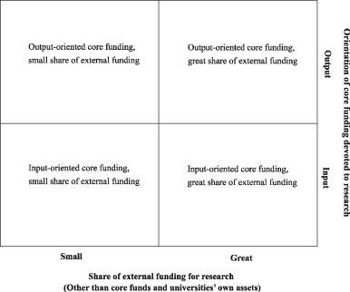

University research funding and publication performance—An international comparison
- Otto Auranena,
 ,
,  ,
, - Mika Nieminenb,
- a Unit for Science, Technology and Innovation Studies (TaSTI), Institute for Social Research, Kanslerinrinne 1, 33014 University of Tampere, Finland
- b University of Tampere, Kalevantie 4, 33014 University of Tampere, Finland
- Received 8 January 2008, Revised 11 March 2010, Accepted 12 March 2010, Available online 20 April 2010

Abstract
In current science policies, competition and output incentives are emphasized as a means of making university systems efficient and productive. By comparing eight countries, this article analyzes how funding environments of university research vary across countries and whether more competitive funding systems are more efficient in producing scientific publications. The article shows that there are significant differences in the competitiveness of funding systems, but no straightforward connection between financial incentives and the efficiency of university systems exists. Our results provoke questions about whether financial incentives boost publication productivity, and whether policy-makers should place greater emphasis on other factors relevant to high productivity.
Keywords
- University research;
- Funding;
- Competition;
- Publication performance;
- Efficiency
1. Introduction
Hand in hand with the rise of the New Public Management and expanding global techno-economic competition, an increasing prominence has been given to the idea that university systems employing output incentives and competition mechanisms are more efficient and productive than systems in which such incentives and mechanisms are employed less or not at all. While there is some evidence of the short-term usefulness of incentives and competition, country-specific comparative information on research performance in relation to the scope and scale of competition seems to be largely missing (Geuna and Martin, 2003 and Liefner, 2003). In this article we study this relationship by comparing the funding environments of university research in eight countries. We scrutinize allocation mechanisms for direct government research funding, shares of external funding and compare these systemic characteristics with university publication outputs of countries. Do university research systems that operate in competitive funding environments perform better than others? The question has high policy relevance and we suggest a critical re-examination of the idea that competition and incentives boost the productivity of university research.
In recent decades, university sector research funding has changed in many countries. The share of direct government funding has gradually decreased, while the share of external and industrial funding has increased. At the same time, public funding has faced transformations. Government core funds have been increasingly allocated on the basis of performance, and funding agencies have adopted mission-oriented and contract-based strategic allocation procedures (e.g. OECD, 1998, OECD, 2004, Skoie, 1996 and Slaughter and Leslie, 1997). Nonetheless, public funding is still the predominant source of funding for university research. For instance, the mean for industry funding of university research in OECD countries in 2003 was only 6% (OECD, 2005, p. 41). Recent studies have also pointed out country-specific differences in universities’ public funding. There are, for instance, differences as to the allocation mechanisms of the core university funds. Even though utilized extensively, result-based mechanisms do not fully dominate. In a comparison of 11 OECD countries by Jongbloed and Vossensteyn (2001), it was pointed out that the orientation to output is used to a varying extent as an allocation model. Similarly, one of the conclusions of the broad cross-country comparison by Geuna and Martin (2003) was that there is great variation as to the extent and way of using evaluation for resource allocation.
Funding shifts have not taken place without receiving attention. Some observers have been convinced that changes in resource allocation may lead to unintended negative consequences especially in terms of basic research outputs (e.g. Geuna, 1999 and Ziman, 1996). Others have argued that the whole way of science-society interaction is changing in the global knowledge economy, leading the science system to produce more socially relevant and applicable knowledge (e.g. Etzkowitz and Leydesdorff, 2000, Jacob and Hellström, 2000 and Nowotny et al., 2001). Some other studies have claimed, in contrast, that while researchers utilize new funding opportunities, they succeed in balancing scientific and extra-scientific interests. Therefore, funding shifts do not strongly affect the actual practices of research, for example, publication behaviour (Albert, 2003, Behrens and Gray, 2001 and Van Looy et al., 2004).
In this article we focus on the idea that financial incentives either form a macro-level imperative or an opportunity in the development of university-based research. More precisely our research questions are:
- 1.
How do the funding environments of university research vary across countries?
- 2.
Are there differences among countries in their publication performance according to the degree of competitiveness of the funding environment?
The structure of the article is as follows. The conceptual background is introduced in Section 2, including the analytical framework for comparing the funding environments. Data and methods are described in Section 3, followed by the analysis of the allocation mechanisms for government core funding and level and sources of university research funding (Section 4.1). Based on the analysis, the compared countries are placed into the analytical framework (Section 4.2). We then connect the analysis of funding environments with the analysis of publication performance (Section 4.3). Results and their implications are discussed in Section 5.
2. Conceptual background
2.1. Principal-agent dilemma and New Public Management
The major rationale for the shift of public policies towards increasing output orientation and the use of external competitive funding mechanisms relates to the principal-agent dilemma, as well as to the ideas of the New Public Management (NPM) that market-like mechanisms create an incentive towards enhanced performance. The principal-agent dilemma (Van der Meulen, 1998) reflects a situation in which the government or a governmental agency is attempting to enhance its own or wider societal targets, for instance, via public research funding programs. As it does not have the appropriate know-how and human resources to conduct the mission, it needs to “delegate” the actual implementation of tasks (research) to specialized organizations such as universities. It faces at least two problems in the implementation of programs. First, it needs to screen out the best possible actors to conduct the mission and second, it cannot control all the activities of relatively independent actors. If it does not choose to trust the actors, it needs both appropriate selection and control mechanisms, which ensure that the principal's targets are fulfilled.
Ideas rooted in the New Public Management have provided some practical answers to these problems (e.g. Pollitt, 1993). In general, in the science and technology policy the NPM has meant the increasing use of results as a screening mechanism and the use of targeted external funding with related evaluation practices as a control mechanism. The general idea behind competitive mechanisms has been twofold. First, it has included the idea that if money is given to the best performers, it will most likely produce better results. Therefore, the allocation should be based on earlier results. Second, if the allocation is based on results, it creates a general incentive for all the actors to achieve better results in order to become more competitive. Furthermore, the shift of focus to results enables a detailed assessment of activities, which, in turn, means enhanced control possibilities.
In many studies concerning the impact of funding to research activity, the implicit or explicit theoretical assumption is that dependence on external resources (resource dependence theory: Pfeffer and Salancik, 1978) forces research organizations and researchers to alter their activity as conditions for funding change. Our starting point here is that there is no straightforward mechanism from funding incentives to research activity, but rather that it is the complex mix of different allocation mechanisms, funding sources and their varying criteria of funding which creates incentives for change or stability in the system. At times these incentives balance each other and at other times they reinforce each other (cf. Benner and Sandström, 2000 and Geuna, 1999).
There is no doubt that research activity is affected by several other contextual elements from cultural practices to the political legitimization of a system. For example, research assessments and the overall science policy “climate”—while not being directly connected to funding—may have consequences on an institutional level (Jongbloed, 2007). On the other hand, researchers and universities are highly able to adapt their behaviour and organization to new external requirements in ways that do not affect their pattern of activity too much if requirements do not match their interests (Calvert, 2000 and Krücken, 2003). Furthermore, external policy pressures and incentives are mediated by existing disciplinary cultures (Hakala and Ylijoki, 2001).
2.2. Typology of funding environments
Funding models for university research can be classified on the basis of the degree to which they are based on internal or external funding (Irvine et al., 1990). In general, internal funding can be defined as consisting of governmental core funding and a university assets. While, strictly speaking, from the universities’ perspective, governmental core funding is also external funding by nature, it is usually justified to see it as internal funding so far as universities are capable of determining its allocation and use within their organizations. In reality this view is complicated by various earmarked and strategic funds, which can be subsumed into block grants as well as by steering exercised by the state via various funding methods.
External funding, in turn, can be defined as public and private research funding which is not part of the core funds. Public external funding is composed of public project funding or grants by public funding agencies and contracts with public administration. While contracts with public administration correspond with contracts with the private sector, funding agencies with varying aims also carry out a science policy steering function (Braun, 1998). The state can use both the allocation of core funds and funding agencies as steering instruments. Because universities’ research funds usually consist predominantly of governmental core and agency funding, the targets and criteria of public funding play a major role in the university-system-level steering.
The basic idea in the analytical framework (Fig. 1) is relatively simple: there are country-specific funding environments,1 which vary due to different funding sources, their shares of total funding and involved incentives. Depending on the internal–external funding ratio and input–output orientation of the core funding allocation, the overall systemic dynamics caused by funding vary. These dynamics, in turn, may have varying impacts on system outputs. The continuums are cross-tabulated in order to form a two-dimensional framework for estimating country-specific systemic characteristics (cf. Jongbloed and Vossensteyn, 2001). The position each country has in this two-dimensional framework mirrors the potential susceptibility of the universities in a given country to different steering impulses and activity paths in research.
- 

- Fig. 1.
Framework for positioning university research funding systems. Funding systems (countries) can be positioned in the framework according to their orientation of core funding and share of external funding.
On the left side of the field, state funding dominates in the form of core funds. The role of the state is important in the steering of the system. Universities are mainly dependent on the state core resources and affected by political steering. On the right side of the field, universities have more funding sources and, part of the governmental steering occurs through funding agencies. The role of the state is not necessarily weaker compared to the situation on the left side but it is more indirect. However, in this case there are also other actors (e.g. industry), which may directly affect the orientation of research while in the previous case these interests are mainly represented indirectly through state steering.2 The lower part of the field describes input-oriented systems and the upper part systems with an output orientation in government core funding. In an input-oriented system the governmental steering is usually weaker than in output-oriented systems. In input-oriented systems the state is more concerned about the sufficiency of resources, while in output-oriented systems it explicitly expects efficiency and definable results from the universities (Geuna and Martin, 2003, p. 296; Jongbloed and Vossensteyn, 2001, p. 128).
In general, systems in which governmental core funding dominates are sensitive to changes in the allocation mechanisms and incentives of public funding. However, core funding may also increase stability in the system as it covers the salaries of permanent research and teaching personnel as well as basic infrastructure expenditures. Usually it is not possible to use external project funding for these purposes. Therefore, systems in which external funding dominates can be seen as volatile from the perspective of permanent basic structures. On the other hand, external funding and its availability can also be seen as an opportunity for new initiatives and the extension of activities. Input-oriented core funding systems are potentially less dynamic than output-oriented systems (Geuna and Martin, 2003, pp. 297–299).
3. Data and methods
3.1. Data
The compared countries have been selected on the basis that the comparison would include both big and small countries as measured by total R&D expenditures and output of scientific publications. The compared countries are: Australia, Denmark, Finland, Germany, the Netherlands, Norway, Sweden, and the UK. For each country, we collected three types of data: document data on the mechanisms of government core funding, statistical data on the development of level and sources of research funding, and data on publication volumes. Data were collected from various national sources, OECD databases and Thomson Reuters Web of Science databases (the Science Citation Index Expanded, the Social Sciences Citation Index, and the Arts & Humanities Citation Index).
One problem in the data on funding mechanisms was that the quantity of available information as well as its quality varied across countries. In some cases the data had to be collected from a number of different sources in order to have satisfactory information (see Appendix A for more details). Regarding the structure of research funding in Germany and the Netherlands, we had to rely on a research report (Hackmann and Klemperer, 2000). These figures are therefore older than in the other countries studied.
The data mainly cover the situations in the countries from the beginning of the 2000s to the mid-2000s. There have been and are transformation processes going on in the compared countries’ university funding systems. Hence the situation in some of these countries has changed to a certain extent since we gathered the data. Recently transformed or transforming funding systems include at least those of Australia, Finland and Norway. However, as the main aim is to compare the systems and performance of the countries over a certain historical period of time, this does not compromise the analysis.
Even though the OECD and the EU have made recommendations in order to standardize statistical definitions and data collection practices, a number of possible sources of error can be found in the R&D statistics. The most noteworthy is that the data collection methods can differ. This is mirrored, for instance, in the fact that the university sector is defined differently across countries (Irvine et al., 1990, pp. 3–5; cf. Lepori, 2006). One must bear in mind that OECD data often include all higher education institutions carrying out research, not only “research-led” universities.
Web of Science databases are also usually considered methodologically problematic for comparative purposes. They have, for instance, a bias towards journals in the natural and medical sciences and engineering, they favour English-language publications, and cover mainly journal articles excluding much of other research output. Therefore they cover each country's scientific publications only partially and can give misleading information of total performance due to differing scientific profiles (e.g. Bordons et al., 2002, van Raan, 2005 and Weingart, 2005).
Despite their limitations, Web of Science databases remain in practice the only available sources for publication measures, since there are no other databases that can provide a wide international coverage of publications. Over the past few decades, international publishing has become increasingly valued and more common also in the social sciences and humanities (Kyvik, 2003 and Puuska and Miettinen, 2008, p. 101). Since international publishing is both considered a necessary target for high-standard research and emphasized in science policy agendas, Web of Science can be regarded as reflecting the high-standard international performance of a university system. Still, the number of international publications is not synonymous with scientific quality. In a strict sense, our measurement concerns only country-level publication productivity.
One might also be suspicious whether scientific publications form an adequate indicator of overall research performance. In many countries statistics related to the “third mission” of universities are, however, missing or still in the development phase.3 While this information would provide, together with domestic publication information, a more profound picture of countries’ research-related university performance, we believe that the data are as robust as possible concerning the relations between resources and high-standard scientific performance defined as international publications. In addition, the existing empirical evidence indicates that there is necessarily no decline in academic outputs even though universities receive substantial amounts of industrial funding (Gulbrandsen and Smeby, 2005 and Van Looy et al., 2004).
3.2. Methods of analysis
Our analysis consisted of three phases. The first step was to describe the allocation mechanisms of core research funding as well as the level and sources of research funding for universities. The analysis of the allocation mechanisms was based on allocation method(s), funding components and their shares of total core funding, and funding criteria. As funding criteria form the dimension that determines the input–output orientation of core funding in our model, they are described in more detail. As we were interested in university research, descriptions of funding mechanisms focus on research funding components and the associated criteria. Components of funding clearly related to education were excluded. Here we also present data on the “age” (year of implementation) of the respective allocation mechanisms to see how long they have been affecting the university research system in the compared countries. We distinguished between input and output criteria according to the following guideline: when the financier (state) focuses on the sufficiency of resources, it uses input criteria, and when it focuses on the performance and results of the activity, it uses output criteria. Typical input criteria include, for example, the existing funding level of universities (“historical basis”), the number of staff and students, and the strategic and political considerations. Typical output criteria include, for example, the number of produced publications and degrees, the amount of (external) research income earned, and the results of quality assessments.
When analyzing the level and sources of university research funding, we present statistical data on the development of R&D expenditure and recent R&D intensity in the university sector of the compared countries. We also analyze the structure of R&D expenditure at the beginning of the 2000s and show how the share of internal funding (government core funding and university assets) has developed in relation to external funding in 1981–2000.
Second, we positioned the countries in the analytical framework described in Section 2.2. This positioning was based on the results of step 1 of the analysis. Countries with the most competitive funding environments for university research are positioned on the upper right corner of the framework, countries with least competitive environments to the lower left corner.
Third, we analyzed the efficiency of university systems in the compared countries. For this we (a) retrieved from the Science Citation Index Expanded, the Social Sciences Citation Index and the Arts & Humanities Citation Index all the publications attributable to the compared countries’ universities in 1987–2006, (b) searched the OECD science and technology database for higher education R&D expenditures (HERD) in the compared countries in 1981–2000, (c) calculated the means of publications and funding for six-year periods for each country, and (d) calculated the funding per publications ratio for each six-year period for each country. We used a six-year time lag between funding and publications, e.g. the six-year mean of HERD in 1981–1986 was divided by the mean of publications in 1987–1992. This funding per publications ratio indicates the efficiency of universities in producing one scientific publication in each country.
By using six-year means of funding and publications we were able to eliminate possible year-to-year fluctuations, thus giving a simple and more solid figure for general trends. We used six-year time lags because the available resources are not immediately realized as publications. Usually there is lag between the change in R&D investments and the change in the number of publications. As funding makes research activities possible, the studies have to be conducted before publishing. In choosing the time lag we followed the results of an econometric approach by Crespi and Geuna (2008), who concluded that there are no significant effects from past R&D (expenditure) on publication output after six years.
We are not able to control all the possible affecting factors in employing the HERD per publications calculation, such as the varying structures of science and technology systems or funding patterns in the compared countries. While the analysis cannot positively confirm which factors are decisive in publication performance, it can, however, illustrate the role of competition.
4. Results
4.1. University research funding in the compared countries
4.1.1. Allocation mechanisms for core funding
One of the crucial elements in the analysis of funding environments is time. When following the changes in publication productivity one must bear in mind that changes in funding systems have been implemented at different times in the compared countries. The countries where there are no radical changes also form an important point of comparison for the other countries. If there are no remarkable differences in publication productivity between the compared countries over the time, also the effect of the competition mechanisms is doubtful. Another issue is the time lag between implementation of the funding system and its possible consequences. While there is no definitive answer on this question, it might be sensible to assume that the lag is the same as in the case of the change of resources, i.e. maximum six years.
In order to find out the length of influence of incentives used in core funding systems that are described here, we ascertained when these systems were implemented in the compared countries. Most of the systems are rather new but there is more variation if we also include the changes in the more distant past (Table 1). The UK, Netherlands and Denmark have older systems while Finland, Australia and Sweden have more recent systems, and Norway the newest. Table 1 also shows that when governments change the principles of allocating core funding to universities, it often happens by changing some elements of the existing system, not by reforming the entire system at once.
- Table 1.
Year of implementation of the described core funding systems in the compared countries.
Country Year Australia 2002 (some features of the system implemented in 1996) Denmark 1993 (a more output-oriented system adopted at the beginning of the 2000s) Finland 2004 (some features of the system implemented in 1998) Germany 1990s or before that (each state (Land) has its own funding system) Netherlands 2006 (most of the features of the system implemented in 1993) Norway 2002 Sweden 2000 (most of the features of the system implemented in 1997) UK 2002 (most of the features of the system implemented in 1986) - Source: Various national sources, see Appendix A.
- Full-size table
We can conclude that possible long-term effects of performance incentives on core funding are to be expected especially in the UK but to a lesser extent also in Denmark and the Netherlands.
The compared countries can be clustered roughly into three groups according to their input–output orientation in government core funding. To start with the output-oriented systems, the UK and Australia were clearly the most output-oriented systems in the early or mid-2000s (Table 2). Unlike in some other countries, the formula was used plainly as an allocation method and the criteria emphasized performance. In Australia the system was to some extent more focused on measurable performance (e.g. the amount of research income and number of publications) than in the UK. In the UK the emphasis has been on the outcomes of the Research Assessment Exercise (RAE) while some input-oriented funding components can be found in the system. The RAE emphasizes qualitative evaluation of university research while using quantitative indicators as part of the evaluation. Both countries, however, devoted a separate segment of their core funding to research and used predefined performance criteria to allocate it. This makes competition an integral component of obtaining core research funding from the government budget. In addition, the core funds have included several subsumed programs or earmarked allocations for certain purposes, i.e. steering has taken place both through specified targets and performance monitoring.
")
 = Open Access/Open Archive
= Open Access/Open Archive{kind=link}